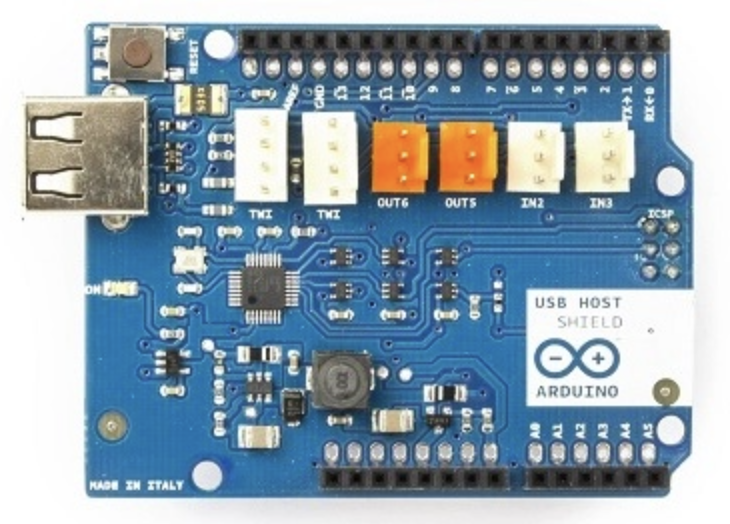

Arduino USB Host Shield
A Maxim MAX3421E USB host controller with a USB-A socket. UsbHostShield drives it over SPI as plain Java, with no Arduino library: it enumerates one full- or low-speed device plugged straight into the socket (no hubs) and offers control and bulk transfers. The shield takes SPI from the ICSP header and selects the chip with D10; D9, its interrupt line, stays free because the driver polls.
Three drivers build on it. Cp210xSerial opens a Silicon Labs CP210x USB-to-UART bridge (baud rate, 8N1, DTR and RTS), and RplidarA2 reads a Slamtec RPLIDAR A2 (A2M8) through that bridge, one revolution at a time into a 360-entry array of distances in millimetres. TiLink sends lists to a TI-84 Plus CE graphing calculator over TI's USB link protocol, the way TI Connect does.

API
| Method | What it does |
|---|---|
begin() |
Starts the bus, resets the controller and puts it in host mode. |
attach() |
Waits for the bus to settle and enumerates the connected device. |
isAttached(), isLowSpeed() |
Whether a device enumerated, and whether it is low speed (1.5 Mbit/s) or full speed. |
vendorId(), productId() |
The device's USB vendor and product IDs. |
setConfiguration(value) |
Selects a configuration of the device. |
controlIn(...), controlOut(...) |
Control transfers, with setup, data and status stages. |
bulkIn(...), bulkOut(...) |
Bulk transfers on one endpoint. |
Example
import io.github.jabrena.juno.hardware.device.lidar.RplidarA2;
import io.github.jabrena.juno.hardware.device.usb.Cp210xSerial;
import io.github.jabrena.juno.hardware.device.usb.UsbHostShield;
import io.github.jabrena.juno.hardware.serial.BaudRate;
import io.github.jabrena.juno.hardware.serial.Serial;
public final class LidarExample {
public static void main(String[] args) {
Serial.begin(BaudRate.BAUD_115200);
UsbHostShield usb = new UsbHostShield();
RplidarA2 lidar = new RplidarA2(new Cp210xSerial(usb));
int[] scan = new int[RplidarA2.DEGREES]; // mm per whole degree, 0 = no return
if (usb.begin() && lidar.begin() && lidar.startMotor() && lidar.startScan()) {
while (true) {
if (lidar.poll(scan)) {
Serial.print("front=");
Serial.println(scan[0]);
}
}
}
}
}
startMotor() sends the A2's SET_MOTOR_PWM command: without it the head stands still, and a scan delivers no measurements. Call poll continuously while scanning, since the bridge buffers only half a second of data. UsbHostRplidarA2Scan prints a summary every ten revolutions and reconnects when the lidar is unplugged.
TI-84 Plus CE calculator
TiLink (io.github.jabrena.juno.hardware.device.ti) puts sensor readings straight into a TI-84 Plus CE's lists. The calculator plugs into the shield with its ordinary computer cable, so it is the USB device and the board plays the part of TI Connect: it enumerates the calculator (0451:E008), agrees on a packet size, and sends variables over TI's USB link protocol (DUSB).
| Method | What it does |
|---|---|
connect() |
Enumerates the calculator, checks it is a TI-84 Plus family model and puts it in normal mode. |
sendList(list, values, count, decimals) |
Replaces L1 to L6 with count values, each values[i] / 10^decimals; an int[] or a long[] (up to fourteen digits). At most 100 values. |
isConnected(), lastError() |
Whether the link is up, and which ERROR_* step failed; lastCalculatorError() holds the calculator's own code when it refuses a variable. |
TiLink calculator = new TiLink();
int[] celsius = {23, 24, 24};
if (calculator.connect() && calculator.sendList(2, celsius, celsius.length, 0)) {
// L2 is now {23 24 24}
}
GroveDht11TiLists logs a Grove DHT11 every five seconds: L1 holds the UTC date and time as YYYYMMDDHHMMSS, L2 the temperature and L3 the humidity. On the calculator, [stat] → Edit… shows them as a table, and a STAT PLOT of L1 against L2 graphs them.
The calculator takes variables at the home screen and in most menus; an app such as EasyData can keep it busy until it is closed. EasyData and the Hub app cannot read the board this way: they talk only to devices plugged into the calculator as USB host, through a mini-A plug.